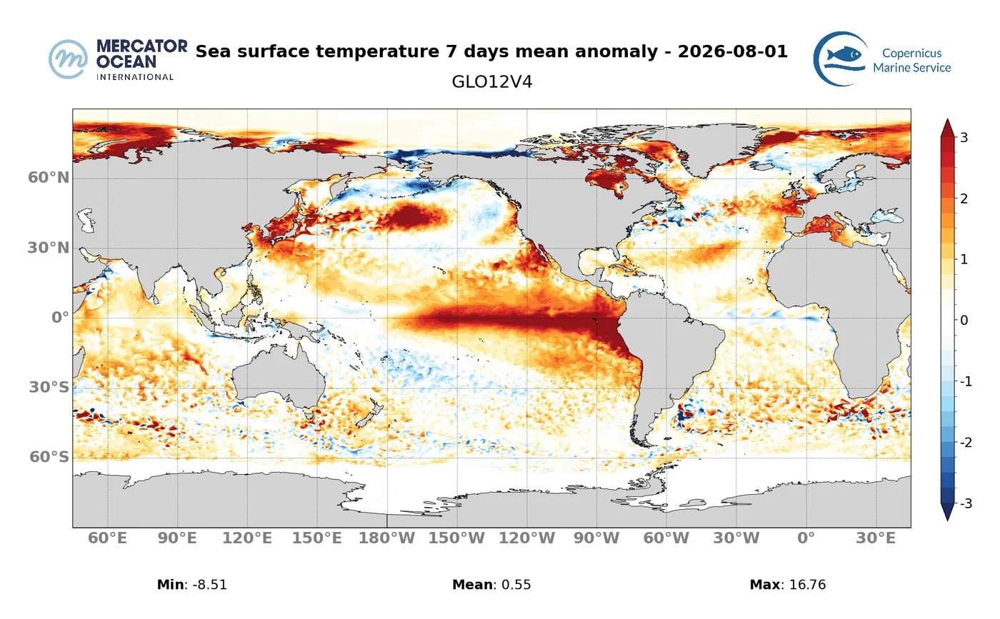
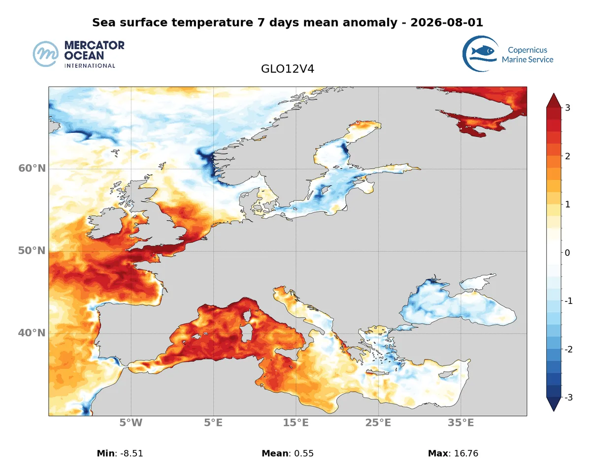

A website concept for Mercator Ocean International
Digital Ocean knowledge, accessible to all.
One coherent web platform for the organisation that operates the Copernicus Marine Service and co-develops the European Digital Twin of the Ocean. Built as a working answer to consultation 26516-MO-WEB: audit, development, and a bilingual layer you can try right now.
The EN / FR switch in the navigation is live on this homepage, as a working preview of the Lot 3 bilingual layer. The full demo is on the Translation page.
Consultation 26516-MO-WEB
Three lots, one coherent platform.
Each lot is previewed in this concept as a working page, not a promise. Award criteria weight technical value at 70 percent; we lead with evidence.
SEO, performance and UX audit
A complete audit of natural referencing, performance and user experience. We already measured your live homepage; the findings page is the preview.
€80,000 estimated value · 24-month contract See real findings Lot 2 · 26516L02Development and technical maintenance
Corporate website and intranet: evolutions, security, performance budgets, and a maintenance cadence that keeps a science institution publishing.
€110,000 estimated value · 24-month contract See the concept Lot 3 · 26516L03Bilingual EN / FR automatic translation
Machine translation with a scientific glossary and human review workflow. The language switch on this very page is the working preview.
€20,000 estimated value · 24-month contract Try the bilingual layerLot values are the buyer's estimates published in TED notice 478028-2026. One tenderer may bid for all three lots. The 24 months is the contract term Mercator set, not the build time: the audit lands in the first weeks and the bilingual layer in the first quarter, with the rest of the term spent operating and maintaining what is built.
Ocean data, treated as content
Your science is the imagery.
No stock photography. These are Mercator Ocean's own sea surface temperature forecasts, served in modern formats at a fraction of their current weight.

WebP · 168 KB
WebP · 93 KBWeights shown are the WebP files this page actually serves, converted from the original PNGs published on mercator-ocean.eu. Conversion approach on the audit page.
Ocean intelligence
The Digital Twin, told simply.
A dynamic, science-based digital replica of the Ocean, coordinated by Mercator Ocean on behalf of the European Commission. The concept page structure gives each capability layer one clear sentence.
How we structure science contentThe first question the capability layers answer: the state of the Ocean right now.
The second question: where the Ocean is heading next.
The third question: what would happen under a different scenario.
An institution in motion
Becoming intergovernmental.
The website of an organisation changing legal form has to communicate institutional weight. The concept treats the transformation as a first-class story.
- 30 years
Three decades of operational oceanography in Toulouse, growing to a team of 120 experts.
- 2022
At the One Ocean Summit in Brest, six European states commit to transforming Mercator Ocean into an intergovernmental organisation.
- 2025
At the UN Ocean Conference in Nice, twelve European countries, Belgium among them, endorse the joint Declaration for the Mercator International Centre for the Ocean.
- Today
Mercator Ocean operates the Copernicus Marine Service under EU mandate and hosts the OceanPrediction Decade Collaborative Centre under IOC-UNESCO.
Information architecture
Three pillars, mirrored in navigation.
Ocean Data
Monitoring and forecasting, research and innovation, and open access to Ocean data, from the GLORYS12 reanalysis to the GLONET AI forecasting system.
Ocean Community
Global mobilisation, community coordination and capacity development, with partners including ESA, EUMETSAT, EuroGOOS and EMODnet.
Ocean Intelligence
The Digital Twin of the Ocean, Ocean bulletins and insights, and Ocean knowledge: decision-support built on trusted science.
Built as a working preview, not a promise.
Every page of this concept maps to a lot of consultation 26516-MO-WEB. The audit contains real measurements of the live site. The bilingual switch works. The approach page explains delivery, cadence and pricing logic.
Read the delivery approach